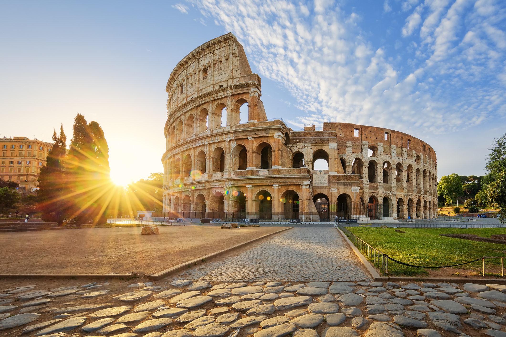

- 
-
-
🇮🇹 Italie 🍕
654€ TTC
-
-
🏛️ Découvertes Culturelles & Historiques
Visiter le Colisée à Rome 🏟️ : Plongez dans l’histoire des gladiateurs et de l’Empire romain.
Explorer le Vatican et la Chapelle Sixtine 🎨 : Admirez les fresques de Michel-Ange.
Découvrir Pompéi et le Vésuve 🌋 : Voyage dans le temps dans cette ville antique figée sous la lave.
Se balader sur le Ponte Vecchio à Florence 🏰 : Pont emblématique avec ses bijouteries d’époque.
Visiter les temples grecs de la Vallée des Temples en Sicile 🏛️ : Un des plus beaux sites antiques du pays.
Explorer les Sassi de Matera 🏚️ : Maisons troglodytes millénaires et ruelles pittoresques.
🍷 Expériences Gastronomiques & Vins
Déguster des pâtes et pizzas à Naples 🍕 : Goûtez la vraie pizza napolitaine.
Visiter les vignobles de Toscane 🍷 : Dégustation de Chianti et Brunello di Montalcino.
Découvrir la gastronomie de Bologne 🍝 : Berceau de la sauce bolognaise et des tortellinis.
Tester les gelatos artisanaux à Florence 🍨 : Les meilleures glaces d’Italie.
Manger des fruits de mer à Venise 🦞 : Risotto alla pescatora ou spaghetti alle vongole.
Dîner romantique sur la côte Amalfitaine 🍽️ : Avec vue sur la mer à Positano ou Ravello.
🚗 Aventures & Excursions Naturelles
Road trip sur la Côte Amalfitaine 🌊 : Route panoramique avec des vues spectaculaires.
Randonnée dans les Dolomites 🏔️ : Paysages à couper le souffle et villages pittoresques.
Découverte des Cinq Terres 🎨 : Villages colorés accrochés aux falaises.
Balade en bateau sur le lac de Côme ⛵ : Entre montagnes et villas somptueuses.
Faire du vélo à travers les vignobles de Toscane 🚴♂️ : Entre Sienne et San Gimignano.
Explorer les grottes de Capri 🏝️ : Notamment la célèbre Grotte Bleue.
🌆 Expériences Urbaines & Insolites
Faire une balade en gondole à Venise 🚣♀️ : Expérience romantique sur le Grand Canal.
Flâner dans le quartier Trastevere à Rome 🏘️ : Quartier bohème avec bars et trattorias.
Prendre un café sur la Piazza San Marco ☕ : Vue imprenable sur la basilique de Venise.
Lancer une pièce dans la Fontaine de Trevi ⛲ : Pour s’assurer de revenir à Rome.
Faire du shopping à Milan 🛍️ : Capitale de la mode avec la Galleria Vittorio Emanuele II.
Assister à un opéra à la Scala de Milan ou à l’Arena de Vérone 🎭 : Soirée magique sous les étoiles.